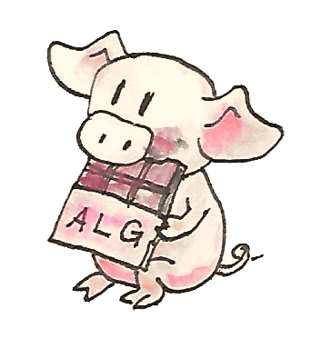

26 AlgebrasสำหรับMonads
ถ้าเราตีความendofunctorsในฐานะวิธีการของการนิยามexpressions algebrasอนุญาตให้เราประเมินพวกกันและmonadsอนุญาติให้เราสร้างและปรับเปลี่ยนพวกกัน โดยการรวมalgebrasกับmonads เราไม่ได้แค่ได้การใช้งานที่หลากหลายแต่เราก็สามารถตอบบางคำถามที่น่าสนใจ
หนึ่งในคำถามแบบนี้นั้นเกี่ยวกับความสัมพันธ์ระหว่างmonadsและadjunctions ในการที่เราได้เห็นมาก่อหน้านี้ ทุกๆadjunctionนิยามmonads(และcomonad) คำถามคือทุกๆmonad(หรือcomonad)สามารถถูกสร้างจากadjunctionได้หรือไม่?คำตอบคือใช่ ได้มีทั้งชุดของadjunctionsที่สร้างมาจากmonadที่ให้มา ผมจะแสดงให้คุณเห็นสองadjunctions

เรามาทบทวนนิยามต่างๆ monadคือendofunctor\(m\)ที่มาคู่กับการแปลงแบบธรรมชาติสองอย่างที่บรรลุบางเงื่อนไขของความสอดคล้องกัน ส่วนประกอบของการแปลงแบบนี้ที่\(a\)คือ
\[ \begin{align*} \eta_a & :: a \to m\ a \\ \mu_a & :: m\ (m\ a) \to m\ a \end{align*} \]
algebraสำหรับendofunctorเดียวกันคือการเลือกของบางวัตถุโดยเฉพาะ(carrier\(a\))คู่กับmorphismอย่าง
\[ \operatorname{alg} :: m\ a \to \]
สิ่งแรกที่ให้สังเกตคือว่าalgebraจะไปยังทิศทางที่ตรงกันข้ามไปยัง\(\eta_a\) แนวคิดคือที่ว่า\(\eta_a\)สร้างexpressionที่ตรงไปตรงมาจากค่าของtype\(a\) เงื่อนไขของความสอดคล้องที่ทำให้algebraเข้ากันได้กับmonadทำให้มั่นใจได้ว่าการประเมินexpressionนี้โดยการใช้algebraที่carrierของมันคือ\(a\)ให้เราได้ค่าดังเดิมกลับมา
\[ \operatorname{alg} \circ \eta_a = \operatorname{id}_a \]
เงื่อนไขที่สองเกิดมาจากความจริงที่ว่าได้มีสองวิธีในการประเมินexpressionช้ำช้อน(doubly nested)อย่าง \(m \ (m \ a)\) เราสามารถทำการใช้\(\mu_a\)ในการทำให้expressionนั้นแบบและก็ใช้ตัวประเมินของalgebra หรือเราสามารถใช้ตัวประเมินที่ถูกlifted ในการประเมินexpressionsที่อยู่ข้างในและก็ทำการใช้ตัวประเมินไปยังผลลัพธ์ เราต้องการที่จะให้แนวทางทั้งสองนั้นเท่ากัน
\[ \operatorname{alg} \circ \mu_a = \operatorname{alg} \circ m\ \operatorname{alg} \]
ในที่นี้ m algคือmorphismที่มีผลัพธ์มาจากการlift\(\operatorname{alg}\)โดยการใช้functor\(m\) diagramsของการcommutingต่อไปนี้ได้อธิบายเงื่อนไขทั้งสอง(ผมได้แทนที่\(m\)กับ\(T\)ในการคาดถึงสิ่งที่ตามมา)
เราก็สามารถแสดงเงื่อนไขเหล่านี้ในHaskellว่า
alg . return = id
alg . join = alg . fmap algเรามาดูที่ตัวอย่างเล็กๆนี้ algebraสสำหรับendofunctorของlistประกอบขึ้นจากบางtypeaและfunctionที่สร้างaจากlistของa เราสามารถแสดงfunctionนี้โดยการใช้foldrโดยการเลือกทั้งสองtypeของสมาชิกและtypeของตัวรวบรวมในการที่จะให้เท่ากับa
foldr :: (a -> a -> a) -> a -> [a] -> aalgebraเฉพาะนี้นั้นถูกกำหนดโดยfunctionที่มีสองargument เรามาเรียกมันว่าfและค่าจะถูกเรียกว่าz functorของlistก็เป็นmonadเข่นเดียวกัน โดยที่returnแปลงค่าๆหนึ่งไปยังlistที่มีสมาชิกเดียว การประกอบกัยของalgebraในที่นี้คือfoldr f z หลังreturnนำxไปยัง
foldr f z [x] = x `f` zที่การกระทำของfนั้นถูกเขียนในรูปแแบบinfix algebraนั้นเข้ากันได้กับmonadในเงื่อนไขความเข้ากันที่ถูกบรรลุในทุกx
x `f` z = xถ้าเราดูที่fในฐานะoperatorแบบbinary เงื่อนไขนี้บอกเราว่าzนั้นคือunitด้านขวา
ในเงื่อนไขของความเข้ากันได้ที่สองทำงานบนlistของlist การกระทำของjoinต่อแต่ละlistsเข้าด้วยกัน เราก็สามารถทำการfold listที่เป็นผลลัพธ์ ในอีกครั้ง ถ้าเราตีความfในฐานะoperatorแบบbinary เงื่อนไขนี้บอกเราว่าoperationแบบbinaryนี้นั้นมีคุณสมบัติของการสลับหมู่ เงื่อนไขเหล่านี้นั้นถูกเติมเต็มในตอนที่(a, f, z)คือmonoid
26.1 T-algebras
เนื่องด้วยนักคณิตศาสตร์ชอบมากกว่าในการเรียกmonadsของพวกกันว่า\(T\) พวกมันถูกเรียกว่าalgebrasที่เช้ากันได้กับมันว่าT-algebras T-algebrasสำหรับmonad\(T\)ที่ให้มาในcategory\(\textbf{C}\)ก่อให้เกิดcategoryที่เรียกว่าcategoryแบบEilenberg-Moore ที่มักจะถูกเขียนโดย\(\textbf{C}^T\) Morphismsในcategoryนั้นคือhomomorphismsของalgebras สิ่งเหล่านี้นั้นคือ homomorphismsเดียวกันของจกสที่ได้เห็นเรานิยามสำหรับF-algebras
T-algebraคือคู่ที่ประกอบด้วยวัตถุcarrierและตัวประเมิน\((a,f)\) ได้มีfunctorหลงลืม\(U^T\)อย่างชัดเจนจาก\(\textbf{C}^T\)ไปยัง\(\textbf{C}\)ที่โยง\((a,f)\)ไปยัง\(a\) มันก็โยงhomomorphismของ T-algebrasไปยังmorphismที่คู่กับระหว่างวัตถุcarrierใน\(\textbf{C}\) คุณอาจจะจำได้จากการสนทนาของadjunctionsของเราที่adjointด้านช้ายคือfunctorหลงลืมที่ถูกเรียกว่าfunctorอิสระ
adjointด้านช้ายของ\(U^T\)นั้นถูดเรียกว่า\(F^T\) มันโยงวัตถุ\(a\)ใน\(\textbf{C}\)ไปยังalgebraอิสระใน\(\textbf{C}^T\) carrierของalgebraอิสระคือ\(T \ a\) ตัวประเมินของเราคือmorphismจาก\(T \ (T \ a)\)กลับไปยัง\(T \ a\) เนื่องด้วยว่า\(T\)คือmonad เราสามารถใช้monadic\(\mu_a\) (joinในHaskell)ในฐานะตัวประเมิน
เรายังต้องแสดงว่านี้คือT-algebra สำหนับอย่างนั้นแล้วเงื่อนไขของความเข้ากันได้ต้องถูกบรรลุอย่าง
\[ \begin{align*} \operatorname{alg} & \circ \eta_{Ta} = \operatorname{id}_{Ta} \\ \operatorname{alg} & \circ \mu_a = \operatorname{alg} \circ T\ \operatorname{alg} \end{align*} \]
แต่สสิ่งเหล่านี้นั้นคือแค่กฏของmonadถ้าคุณแทนที่\(\mu\)สำหรับalgebra
ในที่คุณอาจจะจำได้ ทุกๆadjunctionนิยามmonad มันกลับมาเป็นว่าadjunctionระหว่าง\(F^T\)กับ\(U^T\)นิยามmonad\(T\)นั้นที่ถูกใช้ในการสร้างcategoryแบบEilenberg-Moore เนื่องด้วยเราสามารถทำการสร้างนี้สำหรับทุกๆmonad เราจบลงที่ว่าทุกๆmonadสามารถถูกสร้างจากadjunction ในตอนถัดไป ผมจะแสดงให้คุณเห็นว่าได้มีadjunctionอีกตัวที่สร้างmonadเดียวกัน
นี้คือแผนคือในตอนแรกเราจะแสดงให้คุณเห็นว่า\(F^T\)นั้นคือadjointด้านช้ายของ\(U^T\) ผมจะทำมันโดยการนิยามunitและcounitของadjunctionนี้และพิสูจน์ให้เห็นว่าความเท่ากันแบบสามเหลี่ยมนั้นถูกบรรลุ แล้วผมจะแสดงให้เห็นว่าmonadที่ถูดสร้างจากadjunctionนี้นั้นเป็นmonadดั้งเดิมของเราจริงๆ
unitของadjunctionี้คือการแปลงแบบธรรมชาติ
\[ \eta :: I \to U^T \circ F^T \]
เรามาคำนวณส่วนประกอบ\(a\)ของการแปลงนี้ functor identityให้เรา\(a\) functorอิสระสร้างalgebraอิสระ\((T \ a, \mu_a)\)และfunctorหลงลืมลดมันไปยัง\(T \ a\) ทั้งหมดเหล่านี้ เราได้มาที่การโยงจาก\(a\)ไปยัง\(T \ a\) เราจะแค่ใช้unitของmonad\(T\)ในฐานะunitของadjunctionนี้
เรามาดูที่counit
\[ \varepsilon :: F^T \circ U^T \to I \]
เรามาำนวณส่วนประกอบของมันที่บางT-algebra\((a, f)\) functorหลงลืม ลืม\(f\)และfunctorอิสระสร้างคู่ของ\((T \ a,\mu_a)\) ดังนั้นในการนิยามส่วนประกอบของอิสระ\(\varepsilon\)ที่\((a, f)\) เราต้องการmorphismด้านขวาในcategoryของEilenberg-Moore หรือhomomorphismของT-algebrasอย่าง
\[ (T\ a, \mu_a) \to (a, f) \]
homomorphismอย่างนี้ควรที่จะโยงcarrier\(T \ a\)ไปยัง\(a\) เรามานำตัวประเมินที่หลงลืม\(f\)กลับมา ในตอนนี้เราจะใช้มันในฐานะhomomorphismของT-algebras แน่นอนว่าdiagramของการcommutingเดียวกันที่ทำให้\(f\)เป็นT-algebraอยาจจะถูกตีความใหม่ในการแสดงว่ามันคือhomomorphismของT-algebras
ดังนั้นเราได้นิยามส่วนประกอบของการแปลงแบบธรรมชาติ\(\varepsilon\)ที่เป็นcounitที่\((a, f)\)(วัตถุในcategoryของT-algebras)ในการเป็น\(f\)
ในการทำให้adjunctionนี้สมบูรณ์ เราก็ต้องการที่จะแสดงว่าunitและcounitบรรลุความเท่ากันแบบสามเหลี่ยม ที่ก็คือ
ส่วนแรกนั้นถูกต้องเนื่องด้วยกฏของunitสำหรับmonad\(T\) ส่วนที่สองนั้นคือแค่กฏของT-algebra\((a, f)\)
เราได้สถาปนาว่าfunctorsทั้งสองก่อให้เกิดadjunctionว่า
\[ F^T \dashv U^T \]
ทุกๆadjunctionได้ทำให้เกิดmonad ในการเดินทางไปและกลับ
\[ U^T \circ F^T \]
คือendofunctorใน\(\textbf{C}\)ที่ก่อให้เกิดmonadที่ตรงกัน เรามาดูอะไรคือactionของมันบนวัตถุ\(a\) algebraอิสระสร้างโดย\(F^T\)คือ\((T \ a, \mu_a)\) functorหลงลืม\(U^T\)ทิ้งตัวประเมิน ดังนั้นแน่นอนว่าเรามี
\[ U^T \circ F^T = T \]
ตามที่คาดไว้unitของadjunctionคือunitของmonad\(T\)
คุณอาจจะจำได้ว่าcounitของadjunctionสร้างการคูณแบบmonadผ่านสูตรดังต่อไปนี้
\[ \mu = R \circ \varepsilon \circ L \]
การประกอบกันแนวนอนของการแปลงแบบธรรมชาติสามตัว สองตัวนั้นเป็นการแปลงและโยงแบบธรรมชาติและidentityในแบบ\(L\)ไปยัง\(L\)และ\(R\)ไปยัง\(R\) สิ่งที่อยู่ตรงกลางที่คือcounitคือการแปลงแบบธรรมชาติที่ส่วนประกอบที่algebra\((a, f)\)คือ\(f\)
เรามาคำนวณส่วนประกอบ\(\mu_a\) เราเริ่มด้วยการประกอบกันในแนวนอนของ\(\varepsilon\)หลัง\(F^T\) ที่ทำให้เกิดส่วนประกอบของ\(\varepsilon\)ที่\(F^T \ a\) เนื่องด้วย\(F^T\)นำ\(a\)ไปยังalgebra\((T \ a, \mu_a)\)และ\(\varepsilon\)เลิกตัวประเมินค่า เราจะจบลงที่\(\mu_a\) การประกอบกันทางแนวนอนในด้านช้ายกับ\(U^T\)ไม่เปลี่ยนอะไรเลย เพราะว่าการกระทำของ\(U^T\)บนmorphismsนั้นตรงไปตรงมา แน่นอนว่าดังนั้น\(\mu\)ที่ได้มาจากadjunctionนั้นเป็นเหมือนกันในฐานะ\(\mu\)ของmonadดังเดิม\(T\)
26.2 CategoryแบบKleisli
เราได้เห็นcategoryแบบKleisliก่อนหน้านี้ มันคือcategoryที่ถูกสร้างจากcategory\(\textbf{C}\)อีกตัวและmonad\(T\) เราจะเรียกcategoryนี้ว่า\(\textbf{C}_T\) วัตถุในcategoryแบบKleisli\(\textbf{C}_T\) คือวัตถุของ\(\textbf{C}\) แต่morphismsนั้นแตกต่าง morphism\(f_K\)จาก\(a\)ไปยัง\(b\)ในcategoryแบบKleisliตรงกับmorphism \(f\)จาก\(a\)ไปยัง\(T \ b\)ในcategoryดั้งเดิม เราเรียกmorphismนี้ว่าลูกศรKleisliจาก\(a\)ไปยัง\(b\)
การประกอบกันของmorphismsในcategoryแบบKleisliนั้นถูกนิยามในรูปแบบของการประกอบกันแบบmonadของลูกศรKleisli ตัวอย่างเช่น เรามาประกอบ\(g_K\)หลัง\(f_K\) ในcategoryแบบKleisliเรามี
\[ \begin{gather*} f_{K} :: a \to b \\ g_{K} :: b \to c \end{gather*} \]
ที่ในcategory\(\textbf{C}\)ตรงกับmorphismดังต่อไปนี้
\[ \begin{gather*} f :: a \to T\ b \\ g :: b \to T\ c \end{gather*} \]
เรานิยามการประกอบกัน
\[ h_{K} = g_{K} \circ f_{K} \]
ในฐานะลูกศรKleisliใน\(\textbf{C}\)
\[ \begin{align*} h & :: a \to T\ c \\ h & = \mu \circ (T\ g) \circ f \end{align*} \]
ในHaskellเราก็จะเขียนมันในแบบนี้
h = join . fmap g . fได้มีfunctor\(F\)จาก\(\textbf{C}\)ไปยัง\(\textbf{C}_T\)ที่กระทำแบบง่ายๆบนวัตถุ แต่บนmorphismsมันโยง\(f\)ใน\(\textbf{C}\)ไปยังmorphismใน\(\textbf{C}_T\)โดยการสร้างลูกศรKleisliที่ประดับค่าreturnของ\(f\) ถ้าเรามีmorphism
\[ f :: a \to b \]
มันสร้างmorphismใน\(\textbf{C}_T\)ที่มีลูกศรKleisliที่ตรงกันอย่าง
\[ \eta \circ f \]
ในHaskellเราสามารถเขียนมันว่า
return . fเราก็สามารถนิยามfunctor\(G\)จาก\(\textbf{C}_T\)กลับไปยัง\(\textbf{C}\) มันนำวัตถุ\(a\)จากcategoryแบบKleisliและโยงมันไปยังวัตถุ\(T \ a\)ใน\(\textbf{C}\) การกระทำของมันบนmorphism\(f_K\)ตรงกันกับลูกศรKleisliอย่าง
\[ f :: a \to T\ b \]
คือmorphismใน\(\textbf{C}\)
\[ T\ a \to T\ b \]
ที่ให้โดยการlift\(f\)และก็ทำการใช้งาน\(\mu\)
\[ \mu_{T b} \circ T\ f \]
ในเครื่องหมายของHaskellก็อาจจะอ่านได้ว่า
G f_T = join . fmap fเราอาจจะสังเกตสิ่งนี้ในฐานะนิยามของการมัดแบบmonadในรูปแบบของjoin
มันง่ายที่จะเห็นว่าสองfunctorsก่อให้เกิดadjunction
\[ F \dashv G \]
และการประกอบกันของพวกมัน\(G\circ F\)ก่อให้เกิดmonadดั้งเดิม\(T\)
ดังนั้นนี้คือadjunctionตัวที่สองที่สร้างmonadเดียวกัน ในความเป็นจริงแล้วได้มีทั้งcategoryของadjunctions \(\textbf{Adj}(\textbf{C}, T)\) ที่ทำให้เกิดmonadเดียวกันบน\(\textbf{C}\) adjunctionแบบKleisliที่เราได้เห็นมาคือวัตถุเริ่มต้นในcategoryนี้และadjunctionแบบEilenberg-Mooreคือวัตถุสสุดท้าย
26.3 CoalgebrasสำหรับComonads
ในการสร้างแบบคร้ายๆกันสามารถถูกทำได้สำหรับComonads\(W\)ใดๆก็ตาม เราสามารถนิยาม categoryของcoalgebrasที่เข้ากันได้กับComonads พวกมันทำให้diagramsดังนี้commuteว่า
ที่\(coa\)คือmorphismแบบcoevaluationของcoalgebraที่carrierคือ\(a\)อย่าง
\[ coa :: a \to W\ a \]
และ\(\varepsilon\)และ\(\delta\)คือสแงการแปลงแบบธรรมชาติที่ทำการนิยามcomonad(ในHaskell ส่วนประกอบของพวกมันนั้นถูกเรียกว่าextractและduplicate)
ได้มีfunctorหลงลืมที่ชัดเจนอย่าง\(U^W\)จากcategoryของcoalgebrasเหล่านี้ไปยัง\(\textbf{C}\) มันแค่ลืมcoevaluation เราจะพิจารณาadjointด้านขวาของมันที่ก็คือ\(F^W\)อย่าง
\[ U^W \dashv F^W \]
adjointด้านขวาไปยังfunctorหลงลืมถูกเรียกว่าfunctorแบบcofree \(F^W\)สร้างcoalgebrasแบบcofree มันกำหนดcoalgebra\((W\ a, \delta_a)\)ไปยังวัตถุ\(a\)ใน\(\textbf{C}\) adjunctionนั้นสร้างcomonadดั้งเดิมใหม่ในฐานะการประกอบกัน\(U^W \circ F^W\)
ในแบบเดียวกัน เราสามารถสร้างcategoryแบบco-Kleisliกับลูกศรco-Kleisliและสร้างcomonadใหม่จากadjunctionที่คู่กัน
26.4 Lenses
เรากลับมาที่การสนทนาของเราเกี่ยวกับlenses lensสามาถถูกเขียนในฐานะcoalgebraว่า
\[ \operatorname{coalg}_s :: a \to \operatorname{Store}\ s\ a \]
สำหรับfunctor\(\operatorname{Store} s\)เรามี
data Store s a = Store (s -> a) scoalgebraนี้สามารถถูกแสดงในฐานะคู่ของfunctions
\[ \begin{align*} set & :: a \to s \to a \\ get & :: a \to s \end{align*} \]
(คิดถึง\(a\)ในฐานะเป็นตัวแทนของ”ทั้งหมด(all)“และ\(s\)ในฐานะส่วน”เล็ก(small)“ของมัน) ในรูปแบบของคู่นี้เรามี
\[ \operatorname{coalg}_s\ a = \operatorname{Store}\ (\operatorname{set}\ a)\ (\operatorname{get}\ a) \]
ในที่นี้\(a\)คือค่าของtype\(a\) สังเกตว่าการใช้งานบางส่วนsetคือfunction\(s\rightarrow a\)
เราอาจจะรู้ว่า\(\operatorname{Store} s\)คือcomonad
instance Comonad (Store s) where
extract (Store f s) = f s
duplicate (Store f s) = Store (Store f) sคำถามที่ว่าภายใต้เงื่อนไขอะไรที่lensเป็นcoalgebraสำหรับcomonad? เงื่อนไขความสอดคล้องแรกคือ
\[ \varepsilon_a \circ \operatorname{coalg} = \operatorname{id}_a \]
แปลมาเป็น
\[ \operatorname{set}\ a\ (\operatorname{get}\ a) = a \]
สิ่งนี้คือกฏของlensที่แสดงความจริงที่ว่าถ้าคุณกำหนดfieldของโครงสร้าง\(a\) ไปยังค่าก่อนหน้านี้ของมัน จะไม่มีอะไรเปลี่ยน
เงื่อนไขที่สองคือ
\[ \operatorname{fmap}\ \operatorname{coalg} \circ \operatorname{coalg} = \delta_a \circ \operatorname{coalg} \]
ต้องการทำงานได้มากกว่า ในตัวแรก ลองจำนิยามของfmapสำหรับStorefunctor
fmap g (Store f s) = Store (g . f) sทำการใช้งานfmap coalgไปยังผลลัพธ์ของcoalgให้เราได้ว่า
Store (coalg . set a) (get a)ในทางหลับกัน การใช้งานduplicateของค่าของcoalgสร้างได้ว่า
Store (Store (set a)) (get a)สำหรับให้expressionsทั้งสองเหล่านี้ต้องเท่ากัน สองfunctionsภายใต้Storeต้องเท่ากับในตอนกระทำบนsใดๆก็ได้
coalg (set a s) = Store (set a) sทำการขยายcoalgออกมาเราได้มาที่ว่า
Store (set (set a s)) (get (set a s)) = Store (set a) sสิ่งนี้เท่ากับสองกฏที่เหลือของlensที่ในตัวแรกคือ
set (set a s) = set aบอกเราว่าการตั้งค่าของfieldทั้งสองรอบนั้นเหมือนกับการตั้งค่าครั้งเดียว กฏที่สองคือ
get (set a s) = sบอกเราว่าการได้มาของค่าของfieldนั้นถูกตั้งค่าของ\(s\)ให้\(s\)กลับมา
ในอีกความหมายหนึ่ง lensที่ทำตัวดีนั้นคือcoalgebraของcomonadสำหรับfunctorStoreอย่าแน่นอน
26.5 โจทย์ท้าทาย
- อะไรคือการกระทำของfunctorอิสระ\(F :: C \to C^T\)บนmorphisms(คำใบ้:ใช้เงื่อนไขความเป็นธรรมชาติสำหรับmonadic\(\mu\))
- ลองนิยามadjunction\[U^W \dashv F^W\]
- ลองพิสูจน์ว่าadjunctionข้างบนว่าได้สร้างcomonadดั้งเดิมมาใหม่